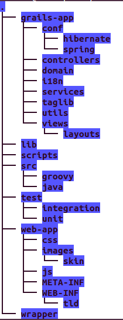

Grails
JVM Web Development Productivity
Created by Marcin Piczkowski
Agenda
- What is Grails
- Why productive?
- But I have code in Java already :(
what is Grails?
Grails is an open source web application framework that uses the Groovy programming language (which is in turn based on the Java platform).

Groovy is an object-oriented programming language for the Java platform. It is a dynamic language with features similar to those of Python, Ruby, Perl, and Smalltalk.
It can be used as a scripting language for the Java Platform, is dynamically compiled to Java Virtual Machine (JVM) bytecode, and interoperates with other Java code and libraries.
-- from Wikipedia
Dynamic.. but..
@groovy.transform.CompileStatic
int fib(int i) {
i < 2 ? 1 : fib(i - 2) + fib(i - 1)
}
Grails facts
- 2005 - Groovy on Rails started as an alternative od Ruby on Rails on JVM
- 2006 - renamed to Grails
- 2007 - G2One Inc. founded by the Groovy and Grails project leads: Guillaume Laforge and Graeme Rocher, and by Alex Tkachman
- 2008 - G2One acquired by SpringSource, Grails 1.0
- 2009 - SpringSource acquired by VMware
- 2011 - Grails 2.0
- 2012 - Grails 2.1, 2.2
- 2013 - Grails 2.3
- 2014 - Grails 2.4
- current - Grails 2.4.2

-- from http://people10.com/blog/groovy-and-grails-application-development-2/
Who uses Grails?
-- from http://grails.org/websites
what do I get?
- Less boilairplate (CoC)
- Web MVC
- GSP (Views)
- GORM (Data access)
- Database
- I18N
- Build
- Test
- Plugins
- Documentaiton and community
what does my boss get?
- Reduced Time to Market
- Reduced Costs
- Long term scalability
Hands on
Console
grails create-app appname
grails -Dgrails.env=UAT run-app
grails create-domain-class com.gprodjvm.Post
grails generate-all
grails
grails test-app unit:
grails test-app com.gprodjvm.*Controller
Convention over configuration
GORM - mappings
class User {
String login
Integer age
...
// SortedSet address
static hasMany = [address: Address]
}
GORM - constraints
class User {
...
static constraints = {
login size: 5..15, blank: false, unique: true
password size: 5..15, blank: false
email email: true, blank: false
age min: 18
}
}
dynamic persistent methods
def someMethod(){
Address a = ...
User u1 = new User(login: 'X', password: 'pass', age: 20)
u.addToAddresses(a)
u.save(flush: true, failOnError: true);
...
User u2 = User.findByLogin('X')
...
User u3 = User.createCriteria().get {
eq('login', 'X')
lock true /* obtains a pessimistic lock
using an SQL select … for update. */
}
}
Events and autotimestamping
class User {
Date dateCreated
Date lastUpdated
...
static mapping = {
autoTimestamp true
}
def beforeDelete() {
ActivityTrace.withNewSession {
new ActivityTrace(eventName: "User Deleted", data: name).save()
}
}
}
--more http://grails.org/doc/latest/guide/GORM.html#eventsAutoTimestamping
Bootstrap
class BootStrap {
def init = { servletContext ->
environments {
development {
....
}
production {
....
}
}
def destroy = {
}
}
grails run-app
grails prod run-app
db console
http://localhost:8080/gjvmprod/dbconsoleScaffolding
class CommentController {
static scaffold = true
}
grails install-templates
Ajax response
class CommentController {
def testAjax = {
render text: ["name": params.name] as JSON, contentType: 'application/json', status: 200
}
}
Plugins
grails-app/conf/BuildConfig.groovy
repositories{
…
mavenRepo "http://repo.spring.io/milestone/"
}
…
plugins {
…
compile ':spring-security-core:2.0-RC2'
…
}
Then run
grails s2-quickstart my.package.security User RoleTesting with Spock
http://code.google.com/p/spock/
@Unroll
void "Should return '#size' item(s) with query '#query'"() {
given:
(1..20).each { i -> new BlogPost(title: "Post #${i}").save() }
params.query = query
and:
def result = controller.search()
expect:
result.size() == size
where:
search_query | size
null | 0
"" | 0
"17" | 1
"Post #1" | 1
"Post" | 20
}
Extensibility
Spring MVC Controllers
grails-app/conf/Config.groovy
grails.spring.bean.packages = ['my.package.name']
grails-app/conf/UrlMappings.groovy
class UrlMappings {
static mappings = {
...
'/system/mvc/test'(uri:"/mvc/test.dispatch")
...
}
}
src/java/my/package/MyController.java
..
@Controller
public class MvcController {
@RequestMapping(value = "/mvc/test.dispatch",
method = RequestMethod.GET)
public ModelAndView getText() {
return new ModelAndView("/system/mvc/test",
new ModelMap("text", " - from MVC controller"));
}
...
}
grails-app/views/system/mvc/test.gsp
<!DOCTYPE html>
<html>
<head>
</head>
<body>
It works! message ${text}
</body>
</html>
Extensibility
Spring Beans
grails-app/conf/spring/resources.groovy
grails-app/conf/spring/resources.xml
...
src/java/my/package/services/MyService.java
class MyService {
...
}
grails-app/services/GrailsService.java
class GrailsService{
def myService
}